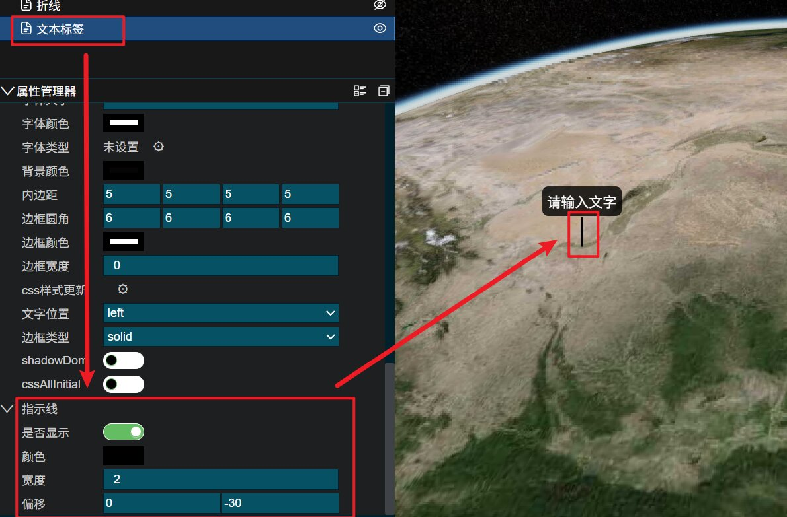
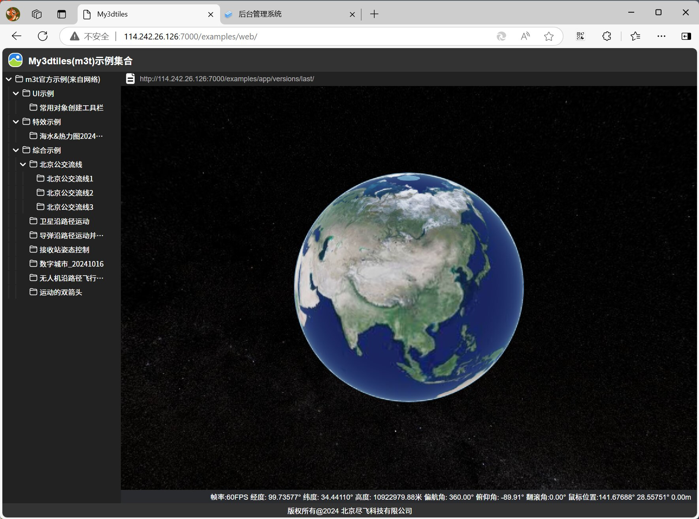
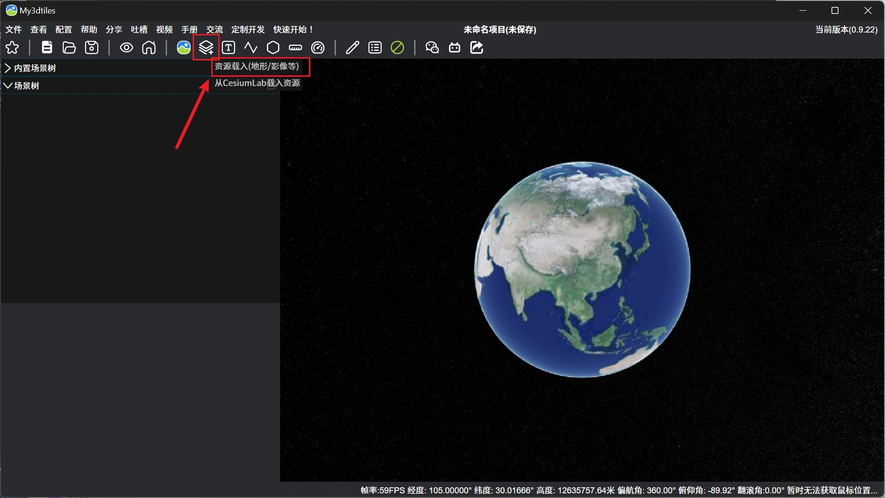
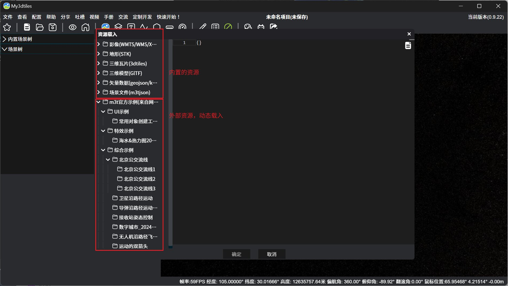
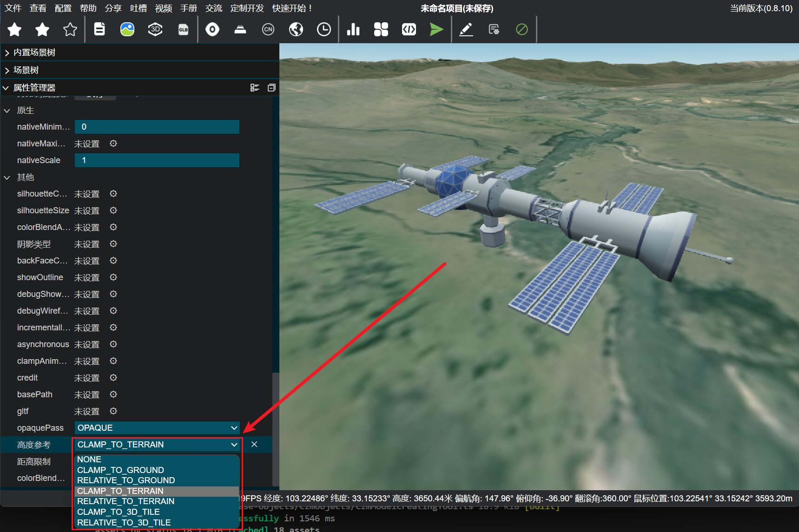

My3dtiles 0.9
版本下载
下载版本说明
0.9.46.20250822
下载 My3dtiles(web)_0.9.46.20250822.zip↗ 下载 My3dtiles_0.9.46.20250822.exe↗ 下载 My3dtiles_0.9.46_x64_zh-CN.msi↗ 下载 My3dtiles_0.9.46_x64_zh-CN.msi.zip↗ My3dtiles_0.9.46_x64_zh-CN.msi.zip.sig
0.9.45.20250517
m3t中的文字模型使用说明20250517
m3t中的文字分界线20250517
0.9.44.20250513
- 标绘基本整理
0.9.43.20250427
- 增加geoRotates方法用来旋转位置数组
- 增加CzmPositionsRotator对象，用来旋转折线等包含位置数组的对象
- GeoDivTextPoi增加指示线

0.9.42.20250414
增加圆形通视分析，修正部分错误日志。
0.9.41.20250327
0.9.39.20250321
方位角测量改进、增加多点方位角测量、增加地理矩形3(指定中心点创建)、增加地理扇形。
0.9.37.20250210
增加obj导入功能
0.9.36.20250107
该版本可以加载3D高斯泼溅数据并调试！
0.9.34.20241230
提升path的计算性能。
0.9.32.20241221
0.9.31.20241220
0.9.30.20241128
0.9.29.20241122
UI对象拷贝连带子对象
0.9.28.20241121
0.9.27.20241116
0.9.26.20241114
0.9.24.20241107(beta)
0.9.23.20241106(beta)
0.9.22.20241104(beta)
0.9.20.20241102(beta)
0.9.19.20241031(beta)
0.9.18.20241030(beta)
0.9.17.20241028(beta)
当前版本对UI进行了大规模改造，但还未彻底弄完，目前会有警告信息。
0.9.16.20241016(beta)
- 新增MyWebSocketClient类，用来连接ws服务器
- 完善UI功能
0.9.15.20241010(beta)
- 修复微软病毒库报错问题
- 增加淹没分析功能(CzmFloodingAnalysis)
- 增加拾取功能对象(MySceneObjectPicking)
- 增加从CesiumLab获取地形、影像、三维瓦片服务并加载的功能
- 自动分析影像路径并加载
0.9.14.20240923(beta)
指定区域下载3dtiles数据 拾取操作封装成对象 MySceneObjectPicking
0.9.12.20240917(beta)
此版本数字城市场景不能直接使用，可以使用这个替代 下载 数字城市_20240917.m3tjson↗ 此版本文件加载功能全部重写，粘贴文件路径、加载数据等功能有待进一步测试
0.9.10.20240914(beta)
此版本存在另存为不起作用的问题
0.9.7.20240906(beta)
- 此版本改动较大，部分功能可能有问题
0.9.4.20240816(beta)
- 增加embeded嵌入页面模板
- 修复web页面打开场景无法自动飞入的问题
0.9.3.20240815(beta)
此版本完善粒子系统，粒子系统相关使用，可看视频： m3t(Cesium)粒子系统使用指南20240814
0.9.2.20240813(beta)
0.9.0.20240809(beta)
功能特色
- 增加了示例集合页面，以后将逐步完善示例

http://114.242.26.126:7000/examples/web/ - 增加资源载入按钮，方便添加现有示例资源。资源载入窗口中的资源分为内部资源和外部资源，外部资源可以从外部动态载入。


问题修复
- [ ] 20240804 web版参数是否可用，需要查证一下
- [ ] ctrl+v遇到json数据，可能读取3dtiles数据时会遇到冲突，和创建节点会遇到冲突 20240801
- [ ] 本地地形影像数据拖拽加载，自动识别 20240801
- [ ] 20240802 CzmModelPrimitive对象的高度参考属性完善，做了扩展。其他数组属性(distanceDisplayCondition，imageBasedLightingFactor，lightColor，sphericalHarmonicCoefficients)也做了更新，避免UI上的崩溃。
